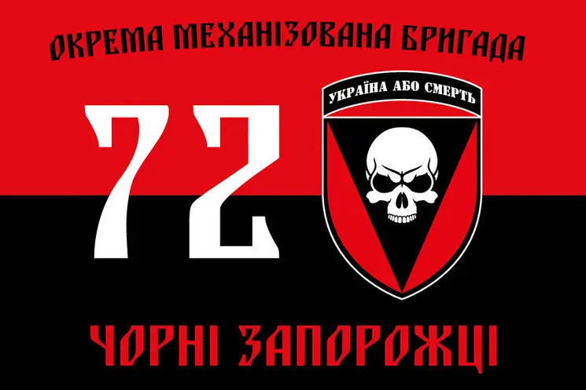

Костаков Сергій Юрійович («Маестро»)
Звання: Старший солдат
Посада: Снайпер
Народився 12 травня 1972 року в м. Київ
«Сергій тренувався у мене з 1988 року до 2000, постійно підтримував заʼязок з клубом. Переслідувався режимом Януковича, рік відсидів в сізо сбу - вдалось втікти в Чехію і в 2014 коли почалась війна повернувся на захист України. Закінчив музичну школу тому Маестро, майстер спорту з біатлону тому снайпер, розвідник» - таким описом згадує про свого учня-товариша Шихан Олег Добко
72-а окрема механізована бригада
Спогад про героя
В музичній школі у Києві навчився грати на скрипці. У часи СРСР Сергій служив розвідником у спецназі ГРУ. У 2010 році був одним з активістів Податкового Майдану і провів близько 8 місяців у СІЗО за сфабрикованим звинуваченням. Після звільнення під підписку про невиїзд, втік до Праги, Чехія надала Сергію політичний притулок, і він мав можливість отримати чеське громадянство, але під час анексії Криму Росією повернувся до України і пішов добровольцем в ЗСУ. Скрипка була з Сергієм і в зоні АТО, де він грав для бійців. В складі 72-ї бригади пройшов бої в секторі «Д». Критикував керівництво бригади, через що мав конфлікти, зрештою отримав документи на переведення до 81-ї десантно-штурмової бригади.
Обставини загибелі: Мав прибути до місця дислокації 81-ї бригади, виїхав з міста Волноваха (Донецька область) 22
листопада 2014 року, з тих пір зв'язок із ним перервався, місце знаходження півроку залишалося невідоме. 2 червня 2015
року, в лісосмузі поблизу села Прохорівка (Волноваський район), було знайдено тіло з документами Сергія, з кількома
кулями в голові, руки в наручниках за спиною. Тіло напіврозкладене і візуально упізнати його неможливо. Впізнаний за
експертизою ДНК.
Місце поховання: м. Київ, Берковецьке кладовище (фото надгробку: ).
Портрет на меморіалі "Стіна пам'яті полеглих за Україну" у Києві: секція 5, ряд 5, місце 13
Загинув 22 листопада 2014 р., с. Прохорівка, Волноваський район, Донецька область.